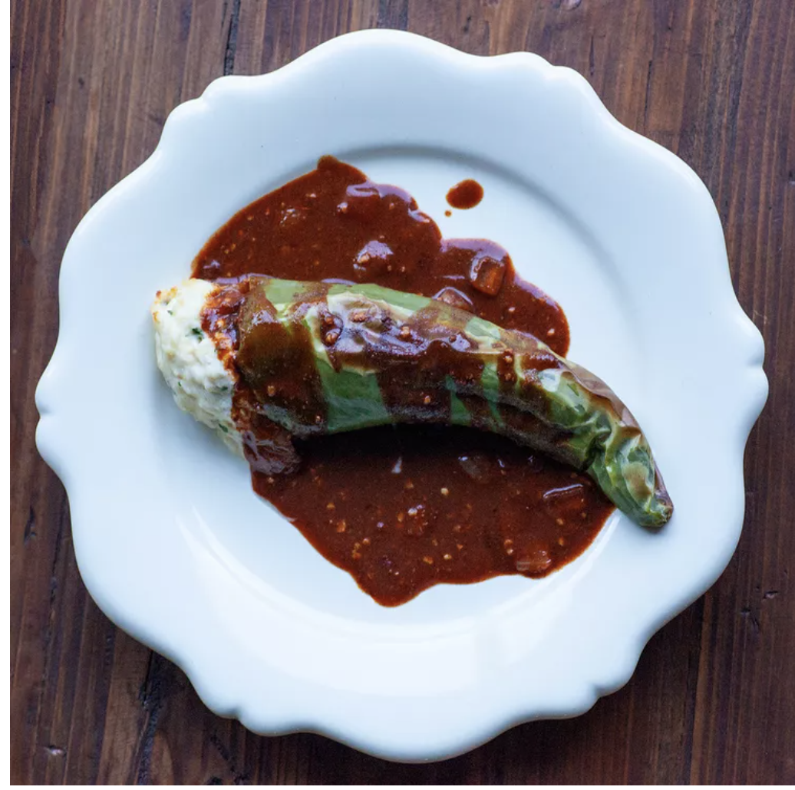

Chicken Stuffed Peppers with Enchilada Sauce

Description
My wife and I came up with this recipe on a whim. It has since become one of our family's favorite recipes.
I feel I must warn you though, once you make this for your family you will likely be making it again and again.
Enjoy! Whatever green peppers you decide to use, make sure they are at least 6 inches long and 3 inches wide.
Ingredients
- 1 ½ pounds skinless, boneless chicken breast halves
- 1 (1.25 ounce) package taco seasoning mix
- 1 cup water
- 4 large Anaheim chile peppers
- 1 tablespoon vegetable oil
- 1 cup diced onion
- 3 tablespoons chopped garlic
- 1 teaspoon dried oregano
- 1 teaspoon ground cumin
- ¼ teaspoon ground cinnamon
- 3 tablespoons all-purpose flour
- 5 tablespoons hot chili powder
- 4 cups chicken broth
- ½ (1 ounce) square bittersweet chocolate, chopped
- 8 ounces shredded Monterey Jack cheese
- 1 (8 ounce) package cream cheese, softened
- ½ cup chopped fresh cilantro
Directions
- Place the chicken, taco seasoning mix, and water into a resealable plastic zipper bag, seal, and massage the
bag with your fingers to mix.
Refrigerate for 30 minutes to marinate..
- Cut the stem and top 1/2 inch from the top of each pepper, and carefully remove the seeds without cutting
holes or breaking skin of the peppers.
Bring a large pot of water to boil, and immerse the peppers in the boiling water for 3 minutes; cool
immediately in a bowl of cold water.
Drain the peppers and set aside.
- Heat the vegetable oil in a large saucepan over medium heat; cook and stir the onion until translucent,
about 5 minutes. Stir in garlic,
oregano, cumin, and cinnamon; cook for 3 minutes. Stir in the flour and chili powder, and cook for about 1
minute. Whisk in the chicken broth,
and bring the mixture to a boil, stirring constantly until the sauce thickens, about 5 minutes. Reduce heat
to low, and stir in the chocolate
until it melts and blends into the sauce. Allow the sauce to gently simmer, stirring occasionally.
- Drain the marinated chicken breasts, and place into a skillet over medium heat. Cook until the chicken is no
longer pink inside, about 10 minutes; remove chicken to a bowl, and set aside to cool. When cool enough to
handle, shred the chicken meat, and lightly mix in a bowl with Monterey Jack cheese, cream cheese, and
cilantro. Stuff each pepper with 1/4 of the chicken mixture, and place on a baking sheet.
- Preheat the oven's broiler and set the oven rack about 6 inches from the heat source.
- Broil the stuffed peppers until blistered and hot, about 4 1/2 minutes per side. Serve with sauce.